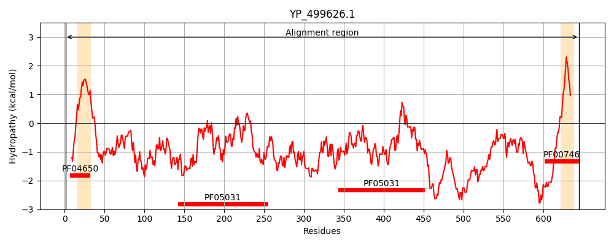
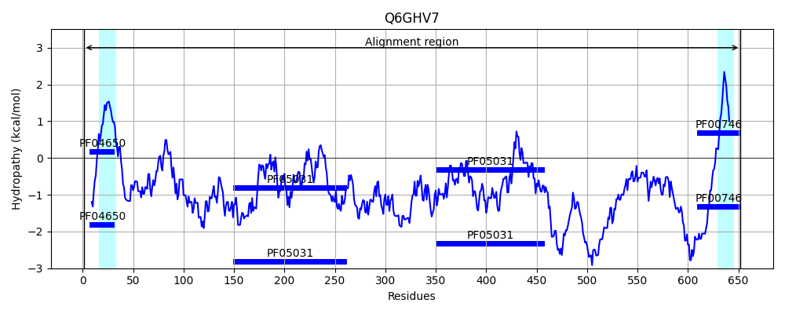
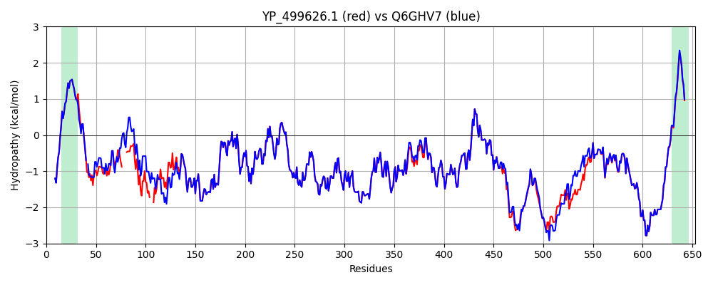

Hit Accession: Q6GHV7
Hit TCID: 9.A.39.1.2
Hit Description: gnl|BL_ORD_ID|14798 gnl|TC-DB|Q6GHV7|9.A.39.1.2 Iron-regulated surface determinant protein B - Staphylococcus aureus (strain MRSA252).
Mach Len: 653
e:0.000000
Query TMS Count : 2
Hit TMS Count: 2
TMS-Overlap Score: 1.450000
Predicted Substrates:CHEBI:5651;ferroheme b
BLAST Alignment:
Score: 3100 , Bit scores: 1198 bits, E-value: 0.0e+00, Alignment length: 653, Percentage identity: 95
Query: 1 MNKQQKEFKSFYSIRKSSLGVASVAISTLLLLMSNGEAQAAAEETGGTNTEAQPKTEAVASPTTTS-EKAPETKPVA----NAVSVSNKEVEAPTSETKEAKEVK---EVKAPKETKEVKPAAKATNNTYPILNQELREAIKNPAIKDKDHSAPNSRPIDFEMKKKDGTQQFYHYASSVKPARVIFTDSKPEIELGLQSGQFWRKFEVYEGDKKLPIKLVSYDTVKDYAYIRFSVSNGTKAVKIVSSTHFNNKEEKYDYTLMEFAQPIYNSADKFKTEEDYKAEKLLAPYKKAKTLERQVYELNKIQDKLPEKLKAEYKKKLEDTKKALDEQVKSAITEFQNVQPTNEKMTDLQDTKYVVYESVENNESMMDTFVKHPIKTGMLNGKKYMVMETTNDDYWKDFMVEGQRVRTISKDAKNNTRTIIFPYVEGKTLYDAIVKVHVKTIDYDGQYHVRIVDKEAFTKANTDKSNKKEQQDNSAKKEATPATPSKPTPSPVEKESQKQDSQKDDNKQLPSVEKENDASSESGKDKTPATKPTKGEVESSSTTPTKVVSTTQNVAKPTTASSKTTKDVVQTSAGSSEAKDSAPLQKANIKNTNDGHTQSQNNKNTQENKAKSLPQTGEESNKDMTLPLMALLALSSIVAFVLPRKRKN 645
MNKQQKEFKSFYSIRKSSLGVASVAISTLLLLMSNGEA+AA EETG TNTEAQPKTEAVASPTTT+ EKAPE KPVA NAVSVSNKEV APT+ETKEAKEVK EVKAPKE KE KPAAKA NNTYPILNQELREAIKNPAIKDKDHSAPNSRPIDFEMKKKDGTQQFYHYASSVKPARVIFTDSKPEIELGLQSGQFWRKFEVYEGDKKLPIKLVSYDTVKDYAYIRFSVSNGTKAVKIVSSTHFNNKEEKYDYTLMEFAQPIYNSADKFKTEEDYKAEKLLAPYKKAKTLERQVYELNKIQDKLPEKLKAEYKKKLE+TKKALDEQVKSAITEFQNVQPTNEKMTDLQDTKYVVYESVENNESMMD FVKHPIKTGMLNGKKYMVMETTNDDYWKDFMVEGQRVRTISKDAKNNTRTIIFPYVEGKTLYDAIVKVHVKTIDYDGQYHVRIVDKEAFTKAN DK+NKKEQQDNSAKKE TPA PSKPT PVEKESQKQDSQKDDNKQ PSVEKENDASSESGKDK P TKP K EVESSSTTPTKVVSTTQNVAKPTTASS+TTKDVVQTSAGSSEAKDSAPLQKANIKNTNDGHTQSQNNKNTQENKAKSLPQTGEESNKDMTLPLMAL+ALSSIVAFVLPRKRKN
Sbjct: 1 MNKQQKEFKSFYSIRKSSLGVASVAISTLLLLMSNGEAKAA-EETGVTNTEAQPKTEAVASPTTTTTEKAPEAKPVAKPVANAVSVSNKEVVAPTTETKEAKEVKAVKEVKAPKEAKEEKPAAKADNNTYPILNQELREAIKNPAIKDKDHSAPNSRPIDFEMKKKDGTQQFYHYASSVKPARVIFTDSKPEIELGLQSGQFWRKFEVYEGDKKLPIKLVSYDTVKDYAYIRFSVSNGTKAVKIVSSTHFNNKEEKYDYTLMEFAQPIYNSADKFKTEEDYKAEKLLAPYKKAKTLERQVYELNKIQDKLPEKLKAEYKKKLEETKKALDEQVKSAITEFQNVQPTNEKMTDLQDTKYVVYESVENNESMMDAFVKHPIKTGMLNGKKYMVMETTNDDYWKDFMVEGQRVRTISKDAKNNTRTIIFPYVEGKTLYDAIVKVHVKTIDYDGQYHVRIVDKEAFTKANADKTNKKEQQDNSAKKETTPAMPSKPTTPPVEKESQKQDSQKDDNKQSPSVEKENDASSESGKDKMPVTKPAKAEVESSSTTPTKVVSTTQNVAKPTTASSETTKDVVQTSAGSSEAKDSAPLQKANIKNTNDGHTQSQNNKNTQENKAKSLPQTGEESNKDMTLPLMALIALSSIVAFVLPRKRKN 652 | Protein Hydropathy Plots: |
|---|
|  |  |
Pairwise Alignment-Hydropathy Plot:
|
|---|
|  |